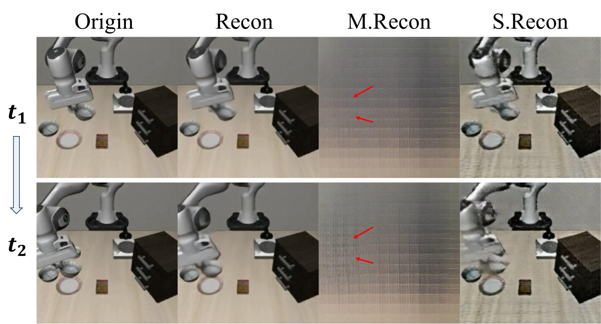
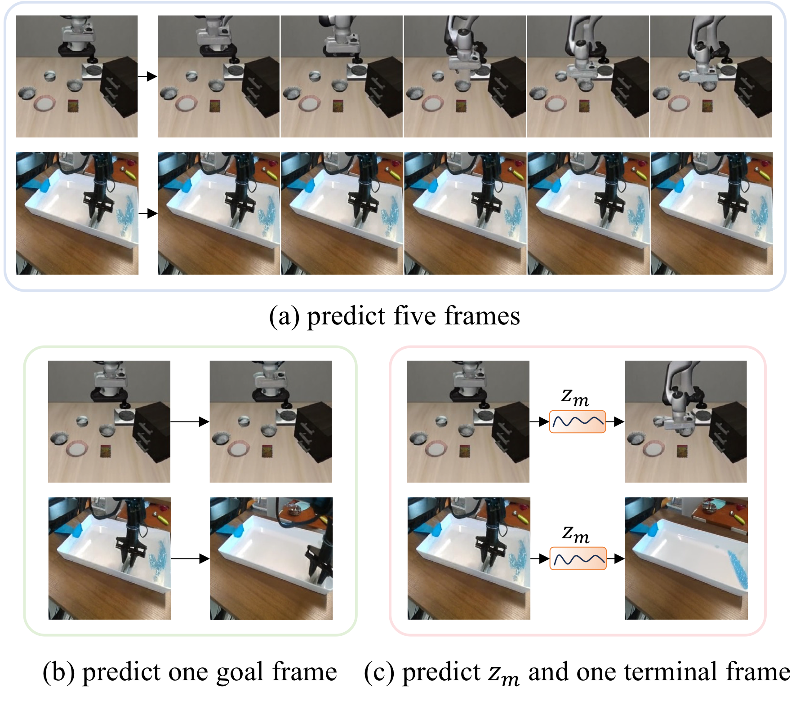
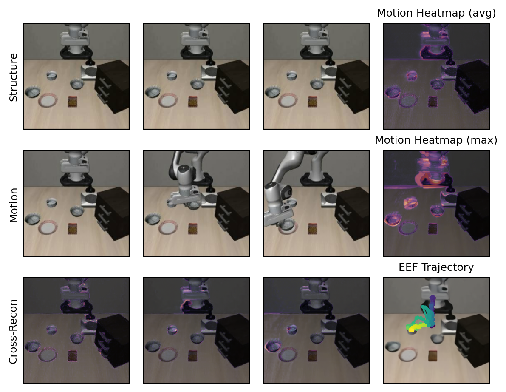
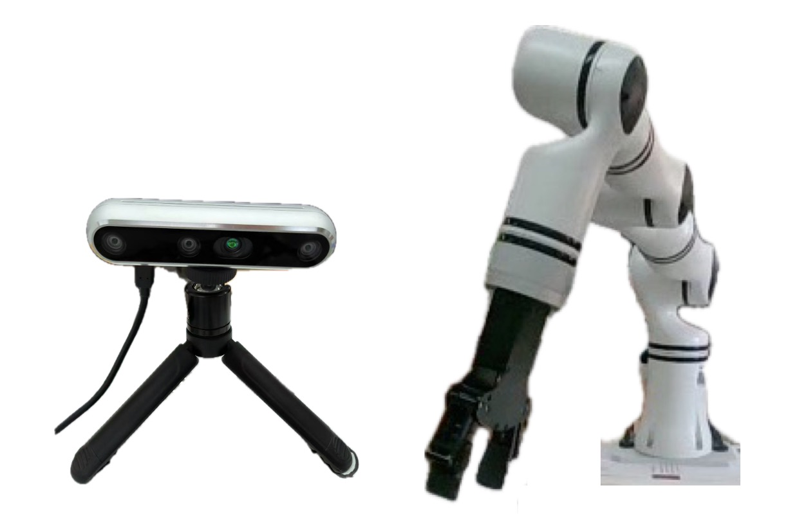

Key Idea
Reason over latent motion chains instead of reconstructing every future background pixel.
CVPR 2026
CoWVLA teaches a VLA model to reason through a compact chain of latent motion, preserving world-model temporal structure without spending capacity on redundant background reconstruction.
Overview
Vision-language-action models benefit from temporal prediction, but explicit future-frame modeling often wastes capacity on static background reconstruction. Pure latent-action approaches are compact, yet they typically model only short transitions and miss richer world dynamics.
CoWVLA bridges these two lines. It first disentangles structure and motion with a pretrained video VAE, then pretrains a VLA decoder to infer a continuous latent motion chain from language plus the first frame, and finally co-fine-tunes latent dynamics with sparse keyframes and FAST action tokens in one autoregressive decoder.
The result is a dynamics-aware VLA that keeps the world-model benefits of temporal reasoning while remaining compact, interpretable, and effective on robotic manipulation.
Reason over latent motion chains instead of reconstructing every future background pixel.
Instruction + first frame supervise both terminal-frame prediction and continuous motion latent prediction.
Co-fine-tuning ties sparse visual checkpoints and discretized action chunks to one shared dynamics token.
Method

CoWVLA combines a latent motion extractor with a unified VLA decoder. The model reasons with a dedicated motion query token and aligns latent dynamics with action generation.
01
A pretrained VidTwin-based video VAE decomposes each clip into structure latent and motion latent, isolating dynamic information from static scene content.
02
From an instruction and the initial frame, the decoder predicts the terminal frame while inferring a continuous latent motion chain through one learnable query token.
03
Alternating keyframes and FAST action chunks keep long-horizon dynamics explicit, aligning latent motion reasoning with stable action prediction.
Results
Best average success rate, improving over UniVLA by 0.6 points.
Best average success rate, outperforming FlowVLA by 2.0 points.
Strong performance on both world-model-heavy and real-data-transfer settings.
| Model | Paradigm | LIBERO Avg. | SimplerEnv Avg. |
|---|---|---|---|
| OpenVLA | Direct action | 76.5 | 1.0 |
| villa-X | Latent action | 90.1 | 62.5 |
| TLA | Latent action | 95.2 | 48.0 |
| UniVLA | World model | 95.0 | 68.7 |
| FlowVLA | World model | 88.1 | 74.0 |
| CoWVLA | World model + latent motion | 95.6 | 76.0 |

Motion-only and structure-only reconstructions show that CoWVLA isolates dynamic cues while preserving global layout.

Compared with world-model or single-goal prediction baselines, CoWVLA produces more instruction-aligned future dynamics.

Cross reconstruction highlights motion-affected regions, showing clean separation between static structure and robot motion.

Real-world deployment setup used for robot data collection and live VLA evaluation.
Supplementary Demos
This group contains video VAE cross-reconstruction results. Each video shows three horizontally concatenated clips: a structure-latent source on the left, a motion-latent source in the middle, and the reconstructed result on the right.
This group contains two episodes from real-world data collection, recording the robot's observations during actual task execution.
This group contains recordings from the real-time deployment of the VLA model controlling the robot arm.
Side phone recordings of the robot arm.
Real-scene camera view used as input to the cloud-hosted VLA model. Each frame is sent to the model, which predicts a sequence of 10 actions, executes them, and then requests the next frame, leading to a choppy appearance.
Side-by-side merged videos of the phone view and the real-scene camera view.
Reference
@inproceedings{yang2026cowvla,
title = {Chain of World: World Model Thinking in Latent Motion},
author = {Yang, Fuxiang and Di, Donglin and Tang, Lulu and Zhang, Xuancheng and Fan, Lei and Li, Hao and Chen, Wei and Su, Tonghua and Ma, Baorui},
booktitle = {Proceedings of the IEEE/CVF Conference on Computer Vision and Pattern Recognition (CVPR)},
year = {2026}
}